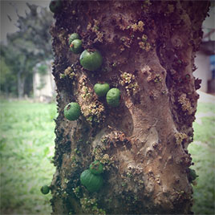

O Zoológico de Guarulhos, mantém cerca de 500 animais, de 100 diferentes espécies, priorizando a fauna nacional, com 91% de espécies nativas.


O Zoo possui uma área de mata e lagos que atraem muitas espécies de aves de vida livre, que podem ser observadas e fotografadas facilmente.
ANIMAIS VIDA LIVRE

O Zoo possui uma área de mata e lagos que atraem muitas espécies de aves de vida livre, que podem ser observadas e fotografadas facilmente.
PESQUISA E CONSERVAÇÃO


VEGETAÇÃO NATIVA

O Zoo de Guarulhos mantém uma rica vegetação com árvores exóticas e nativas que proporciona uma linda paisagem e ainda contribui com a alimentação das nossas aves.
ATIVIDADE PARA AS CRIANÇAS
Aqui você vai encontrar lindos desenhos para colorir, além de aprender como desenhar alguns animais e fazer dobraduras e máscaras.